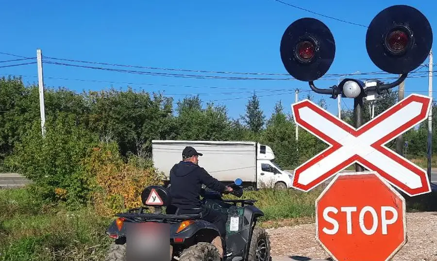
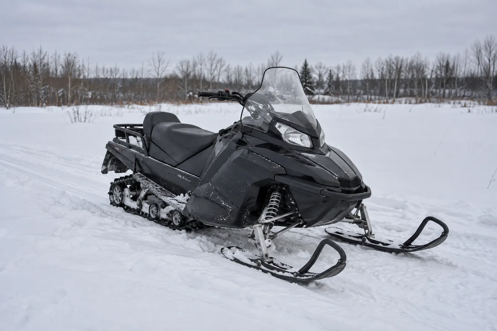

Права на квадроцикл и снегоход
Внедорожная мототехника подчиняется гостехнадзору, а не ГИБДД, и требует отдельной категории. Что относится к A I, с какого возраста её дают и чем это отличается от мотоциклетных прав.
Записаться на права категории A, купить квадроцикл — и на месте выяснить, что документ не тот. Ошибка обходится не только деньгами за ненужное обучение, но и сезоном: пока разбираешься, где учиться заново, снег или подходящая для внедорожника погода могут закончиться. Причина путаницы простая и системная: буква A есть в обеих системах допуска, но это две разные буквы A, за которыми стоят разные ведомства, разные экзамены и разные документы.

Почему квадроцикл и снегоход — не мотоцикл с точки зрения допуска
Категория A водительского удостоверения ГИБДД — это про автомототранспортные средства, которые ездят по дорогам общего пользования в общем потоке. Квадроцикл, снегоход и похожая техника к этой системе не относятся вовсе: они подчиняются Правилам допуска к управлению самоходными машинами (постановление Правительства РФ от 12.07.1999 № 796), которые находятся в ведении органов гостехнадзора, а не ГИБДД. Это два разных ведомства с разными законами, экзаменами и документами; подробный разбор всех различий между двумя системами — в статье «Чем права тракториста отличаются от водительских».
Определение по норме
Пункт 4 Правил допуска даёт категории A следующее определение: «автомототранспортные средства, не предназначенные для движения по автомобильным дорогам общего пользования либо имеющие максимальную конструктивную скорость 50 км/ч и менее». Дальше категория A делится на четыре подкатегории, и первая из них — именно та, что нужна на квадроцикл и снегоход: «A I — внедорожные мототранспортные средства».
Обратите внимание на структуру определения: техника попадает в категорию A не по мощности двигателя, а по назначению и скоростной характеристике — «не для дорог общего пользования» или «50 км/ч и меньше». Это принципиально отличает категорию A от категорий B, C, D и E, которые разложены строго по мощности двигателя (границы 25,7 и 110,3 кВт) — полный перечень категорий и логика их построения собраны в статье «Категории удостоверения тракториста-машиниста».
Категория A I: возраст и объём программы
Возрастной порог для категории A I — самый низкий среди всех категорий самоходных машин: 16 лет (пункт 11 «а» Правил допуска). Это на год-два ниже, чем у большинства остальных категорий; полная возрастная шкала по всем категориям — в статье «Со скольких лет можно получить права на трактор».
Объём типовой программы профессионального обучения по категории A I — 198 академических часов, согласно приложению № 1 приказа Минсельхоза России от 25.07.2022 № 465. Для сравнения: у категорий B, C, D и E — по 450 часов, что почти вдвое больше; программа A I заметно компактнее, потому что и техника, и типовой перечень навыков для неё уже.
Снегоход, квадроцикл, мотовездеход — одна категория

Норма не выделяет снегоход или квадроцикл как отдельные виды техники со своими категориями — она говорит обобщённо про «внедорожные мототранспортные средства». И снегоход, и квадроцикл, и большинство мотовездеходов подпадают под одно и то же определение категории A I, если соответствуют её условиям (не для дорог общего пользования либо скорость не выше 50 км/ч). Практическая разница между этими видами техники — в устройстве и назначении, а не в том, какая категория удостоверения на них нужна.
Где проходит граница с категорией A II
Если техника массивнее и по сути превращается во внедорожный автомобиль — с разрешённой максимальной массой до 3500 кг и не более 8 сидячих мест сверх водителя, — она уже относится к категории A II, а не A I. Формулировка нормы здесь про «внедорожные автотранспортные средства», а не «мототранспортные», и это принципиальное отличие. Подробный разбор категорий A II, A III и A IV, включая дополнительное требование о российском водительском удостоверении и стаже, — в статье «Категории A II, A III и A IV: кому они доступны».
Мотоцикл категории A из водительских прав: почему он тут не работает
Стоит отдельно закрыть источник главной путаницы. Права категории A, которые выдаёт ГИБДД, дают право на управление мотоциклами в системе дорожного движения — это другая норма, другая процедура допуска и другое ведомство. Правила допуска к управлению самоходными машинами эту категорию вообще не упоминают: имеющееся водительское удостоверение с открытой категорией A само по себе не заменяет и не ускоряет получение категории A I. Полноценный разбор мотоциклетной категории ГИБДД, её требований и возраста — на странице «Права на мотоцикл»; расшифровку самих подкатегорий A и A1 в системе ГИБДД эта статья не даёт — там своя нормативная база, отдельная от Правил допуска.
Регистрация техники — отдельное требование
Право на управление и регистрация самой техники — два разных требования, и оба обязательны независимо друг от друга. Постановление Правительства РФ от 21.09.2020 № 1507 устанавливает, что государственной регистрации в органах гостехнадзора подлежит техника с двигателем внутреннего сгорания рабочим объёмом свыше 50 куб. см или с электродвигателем максимальной мощностью более 4 кВт — с определёнными исключениями. Иметь категорию A I и не зарегистрировать саму технику (если она подпадает под этот порог) — то же самое нарушение по смыслу, что и наоборот: одно не заменяет другое.
Что спрашивают при проверке
Из всего разобранного выше следует прямой практический вывод: на квадроцикле или снегоходе при себе нужно иметь не водительское удостоверение категории A, а удостоверение тракториста-машиниста (тракториста) с открытой категорией A I. Пункт 3 Правил допуска формулирует общее требование жёстко: управление самоходной машиной лицом, не имеющим при себе документа, подтверждающего право на управление, запрещается — без деления на «в лесу» или «на дороге общего пользования» эта норма не оговаривает. Бытовая ситуация, где это особенно легко упустить, — снегоход, который используется только за городом, зимой, вдали от дорог общего пользования; разбор именно такого случая — в статье «Дача, ферма, подряд: когда в крае не обойтись без УТМ».
Пять частых заблуждений
- «У меня есть права категории A — квадроцикл можно». Нет: это разные системы допуска и разные документы, права ГИБДД на внедорожную мототехнику не распространяются.
- «Квадроцикл — почти трактор, значит нужна категория по мощности, как у B или C». Нет: категория A (и подкатегория A I) определяется не мощностью двигателя, а назначением техники и скоростной характеристикой — это другой принцип классификации, чем у B, C, D, E.
- «У снегохода и квадроцикла разные категории, они ведь разная техника». Нет: оба подпадают под одно определение «внедорожное мототранспортное средство» и относятся к одной категории A I, если соответствуют её условиям.
- «Права нужны, только если ездить по дорогам общего пользования». Само определение категории A I, наоборот, построено на технике, «не предназначенной для движения по автомобильным дорогам общего пользования» — то есть требование о наличии удостоверения не привязано к конкретному месту использования техники; где именно можно и нельзя ездить — отдельный правовой вопрос, не связанный напрямую с наличием категории.
- «Зарегистрировал технику в гостехнадзоре — значит, можно ездить». Нет: регистрация техники и право на управление ею — два независимых требования, выполнение одного не заменяет другое.
Возрастные пороги по всем категориям целиком и то, как школы решают вопрос набора, — в статье «Со скольких лет можно получить права на трактор». С тем, какие категории заявляет тракторное направление «Авто-Класса» в Перми, можно ознакомиться на странице направления.